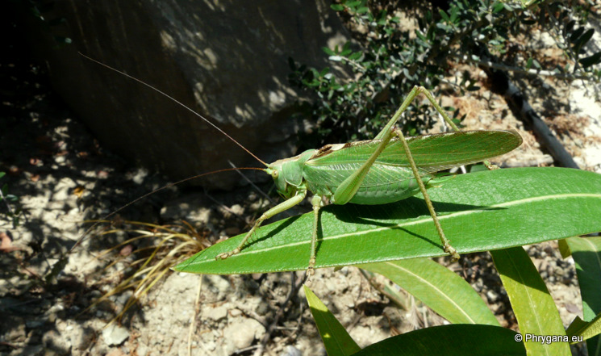
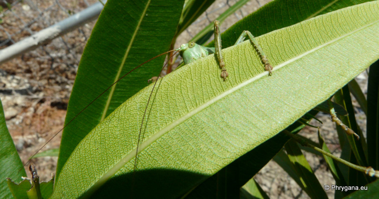
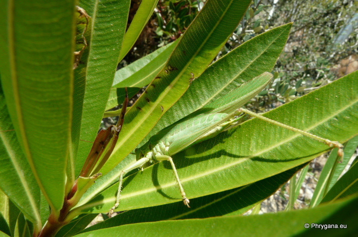
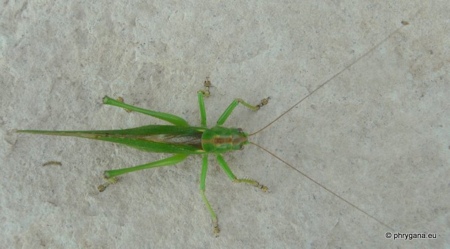
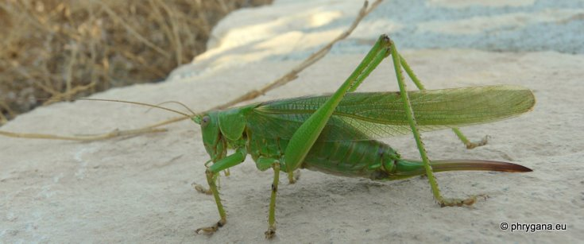
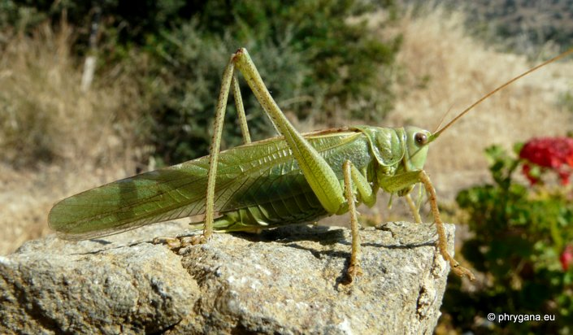
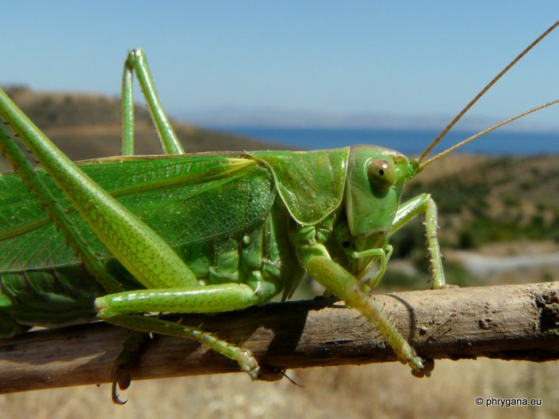
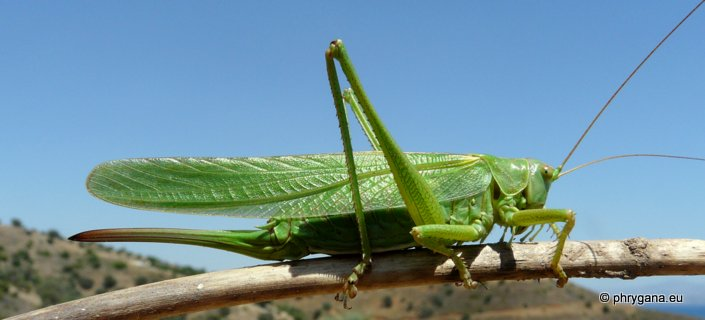

| PHRYGANA | Fauna | Flora | Galles | liste des espèces |
contact -
info - commentaires phrygana1 (at) gmail.com |
| Particularités crétoises | nouveautés | Mines | ressources naturelles |
| Tettigonia viridissima (Linnaeus 1758) |
| 222 | Fauna | ORTHOPTERA | TETTIGONIIDAE | Tettigonia Linnaeus 1758 |
|
 Tettigonia viridissima Melambes (Agios Giorgos) 24 mai 2010 |
| (fr) la Grande Sauterelle verte (en) Great Green Bush-cricket (de) Grünes Heupferd (es) Saltamontes verde común (it) Cavalletta verde (nl) Grote groene sabelsprinkhaan (gr) Τεττιγόνια η πρασινότατη (no) Grønn løvgresshoppe |
| Longueur du corps: de 28 à 36 mm chez le mâle, de 32 à 42 chez la femelle. |
| La couleur de fond est verte, avec souvent une bande dorsale brune; parfois avec des pattes jaunes. Tegmina très longs. Antennes longues (1, 5 fois la longueur du corps). Pattes puissantes. |
| Oviscapte long (25 - 30 mm) atteignant l'extrémité des ailes. Cerques du mâle plus longs que les styles, avec une dent subbasale |
| Espèce carnassière et phytophage: insectes (chenilles, petits orthoptères, larves), diverses plantes herbacées |
| La femelle pond des oeufs (couleur brun foncé) par paquets ou isolément au niveau du sol; éclosion après une longue période et développement larvaire en 7 stades |
| Période adulte: mai juin juillet août septembre |
| Statut en Crète: indigène |
| Biotopes en Crète: lieux chauds et secs, phrygana, vieilles olivaies, bords de chemins, champs abandonnés, garrigues, broussailles |
| Distribution: Europe |
| Note: stridulation puissante. Vient rarement à la lumière |
|
 Tettigonia viridissima Melambes (Agios Giorgos) 24 mai 2010 |
|
 Tettigonia viridissima Melambes (Agios Giorgos) 24 mai 2010 |
|
 Tettigonia viridissima femelle Melambes (Agios Giorgos) 02 septembre 2011 |
|
 Tettigonia viridissima femelle Melambes (Agios Giorgos) 02 septembre 2011 |
|
 Tettigonia viridissima Melambes (Agios Giorgos) 25 juin 2012 |
|
 Tettigonia viridissima Melambes (Agios Giorgos) 20 juin 2012 |
|
 Tettigonia viridissima Melambes (Agios Giorgos) 20 juin 2012 |
| 10 juillet 2013 |
| © paul fontaine -- © Phrygana.eu 2007 -- 2013 |